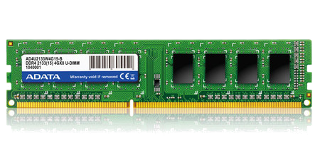

|  | La memoria de acceso aleatorio (Random Access Memory, RAM) se utiliza como memoria de trabajo de computadoras y otros dispositivos para el sistema operativo, los programas y la mayor parte del software. En la RAM se cargan todas las instrucciones que ejecuta la unidad central de procesamiento (procesador) y otras unidades del computador, además de contener los datos que manipulan los distintos programas. Se denominan «de acceso aleatorio» porque se puede leer o escribir en una posición de memoria con un tiempo de espera igual para cualquier posición, no siendo necesario seguir un orden para acceder (acceso secuencial) a la información de la manera más rápida posible. |